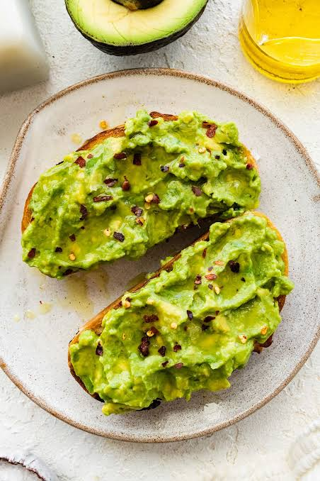

Home
Avocado Toast

Description
The Avocado Toast is the combination of a golden-brown toast
and a creamy and soft layer of mashed avocado. It is well known for being easy to make,
healthy and endlessly versatile depending on the toppings you choose. Personally, a favorite of mine.
Ingredients
- Bread. Two thick slices of sourdough, whole-grain, or seeded bread
- Ripe avocado. One medium avocado.
- Lemon juice. A splash of fresh lemon juice for brightness and to prevent browning.
- Olive oil. A light drizzle of extra-virgin olive oil.
- Salt and pepper. A pinch of sea salt and freshly ground black pepper to taste.
Steps
- Toast the bread. Toast the bread slices until golden brown and crisp so they hold the toppings well.
- Mash the avocado. Cut the avocado in half, remove the pit, and scoop the flesh into a small bowl.
Mash it gently with a fork, leaving a few small chunks for texture.
- Season the mix. Add the lemon juice, salt, and pepper to the mashed avocado and stir gently to combine.
- Assemble and serve. Spread a generous layer of avocado over each slice of warm toast. Finish with a light drizzle of olive oil
and your favorite toppings.
See also